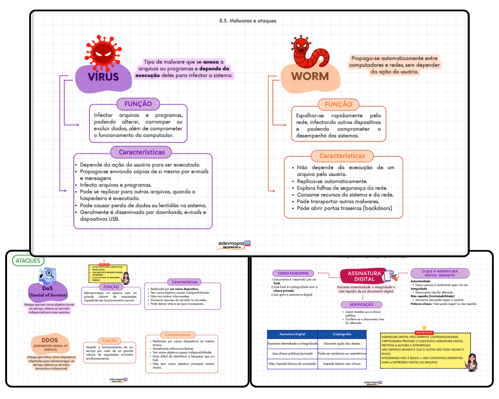
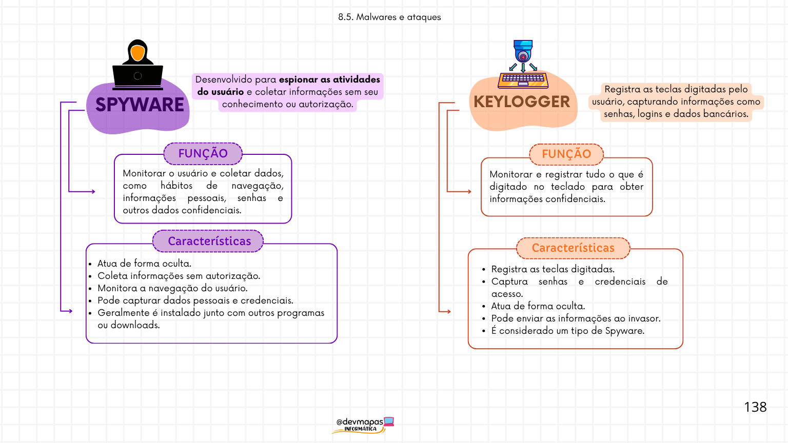
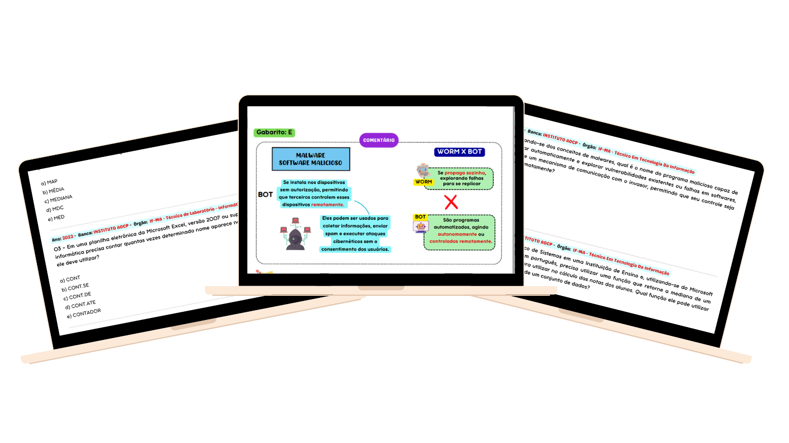
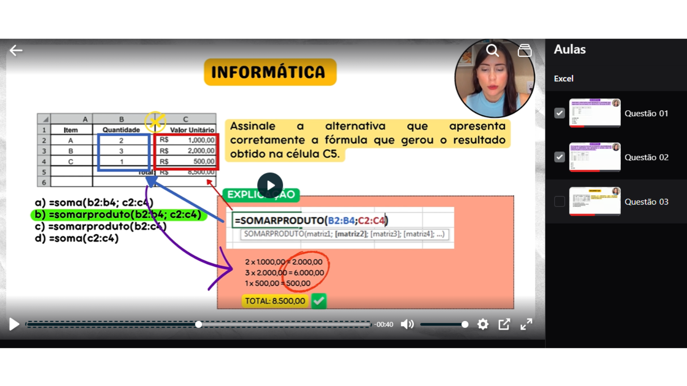
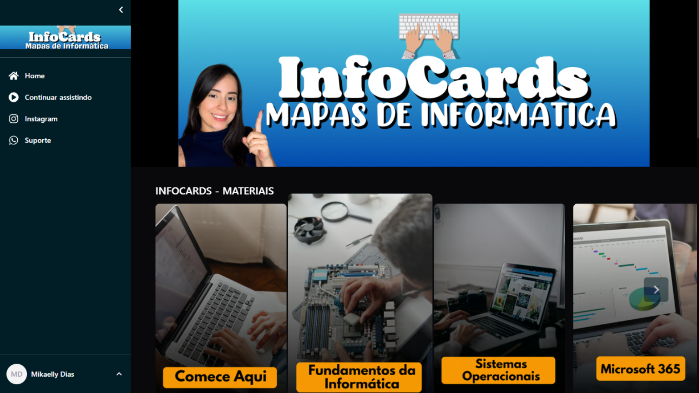

InfoCards: Mapas Mentais Visuais de Informática
Chega de perder horas relendo apostilas. Estude Informática por meio de mapas mentais visuais que organizam os conteúdos mais cobrados em concursos para você entender mais rápido, revisar melhor e chegar preparado para gabaritar a prova.

Estudar informática do jeito tradicional cansa (e nem sempre traz resultado)
Matéria cheia de detalhes
Comandos, atalhos, funções, versões, protocolos... são muitas informações para memorizar. Sem uma organização clara, fica difícil identificar o que realmente importa para a prova.
Muitas páginas para estudar
Apostilas extensas e aulas longas consomem tempo. Quando chega a hora da revisão, encontrar novamente aquele conteúdo pode ser um desafio.
Falta de prática com questões
Estudar apenas a teoria não basta. Muitos candidatos travam na prova porque não conhecem a forma como as bancas costumam cobrar os conteúdos de Informática.
Revisão de última hora vira um desafio
Na reta final, não há tempo para reler todo o conteúdo. Sem um material organizado e questões para praticar, a insegurança tende a aumentar.
Conheça os InfoCards de Informática
Um material completo para estudar, revisar e praticar Informática para concursos. Os InfoCards transformam assuntos complexos em mapas mentais visuais, utilizando cores, ícones, palavras-chave e uma organização que facilita a compreensão e acelera a revisão.

🧠 Mapas Mentais Visuais
Estude os assuntos mais cobrados por meio de mapas mentais organizados para facilitar a compreensão e acelerar suas revisões.

📝 100 Questões Comentadas
Treine com questões semelhantes às cobradas em concursos e aprenda com comentários objetivos e didáticos.

🎥 Questões em Vídeo
Aprenda o passo a passo da resolução das questões com explicações claras para entender como as bancas costumam cobrar os conteúdos.

📂 Conteúdo Organizado por Categorias
Todo o material separado por temas como Hardware, Windows, Linux, Microsoft Office, Internet, Segurança da Informação e Inteligência Artificial.
8 categorias, um clique de distância
Clique em uma categoria para ver do que trata o InfoCard.
Hardware
Carregando...
Veja os InfoCards por dentro
Conheça algumas páginas reais do material e veja como os mapas mentais organizam os conteúdos de Informática de forma visual, facilitando a compreensão, a revisão e a memorização antes da prova.
Feito para quem tem pouco tempo e prova marcada
Revisão rápida
Revise um tema inteiro em minutos, não em horas.
Conteúdo organizado
Tudo separado por categoria, sem bagunça.
Ideal para concursos
Foco no que realmente costuma ser cobrado nas provas.
Fácil memorização
Visual + cor + hierarquia = informação que gruda.
Veja o que nossos alunos estão dizendo
Mais do que um material bonito, os InfoCards ajudam milhares de concurseiros a estudar Informática de forma mais organizada, rápida e eficiente. Confira alguns depoimentos reais.
Garanta agora os InfoCards de Informática
Acesso imediato após a confirmação da compra.
Perguntas frequentes
O acesso é liberado automaticamente por e-mail assim que o pagamento é confirmado pela Kiwify.
É 100% digital. Você pode estudar pelo celular, tablet ou computador, e também imprimir se preferir.
Sim. Os InfoCards cobrem os temas de informática mais cobrados em concursos de nível médio e superior.
Sim, você pode personalizar aqui o prazo de garantia oferecido na sua página de checkout da Kiwify.